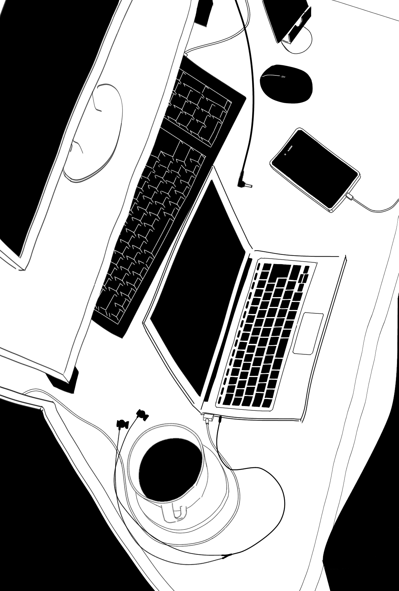
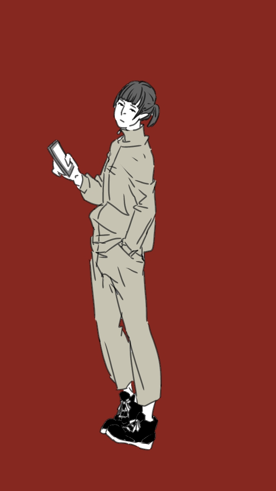
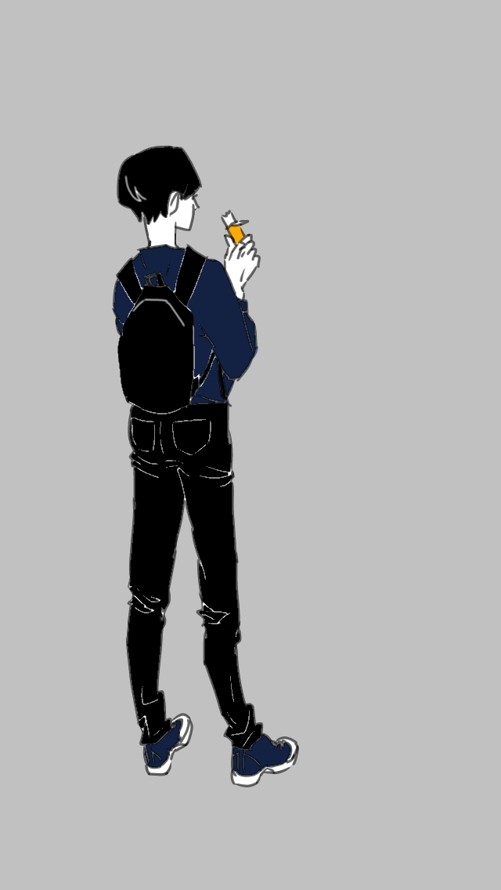
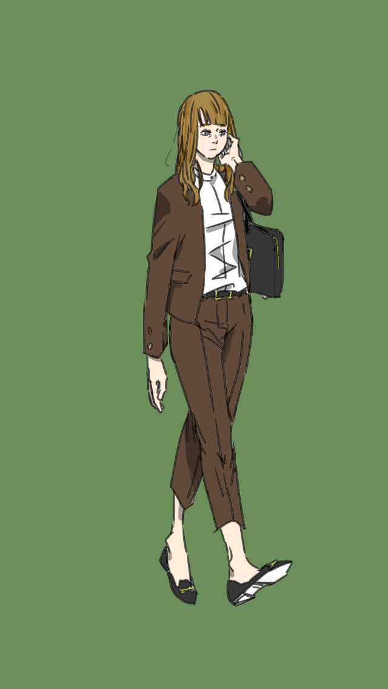
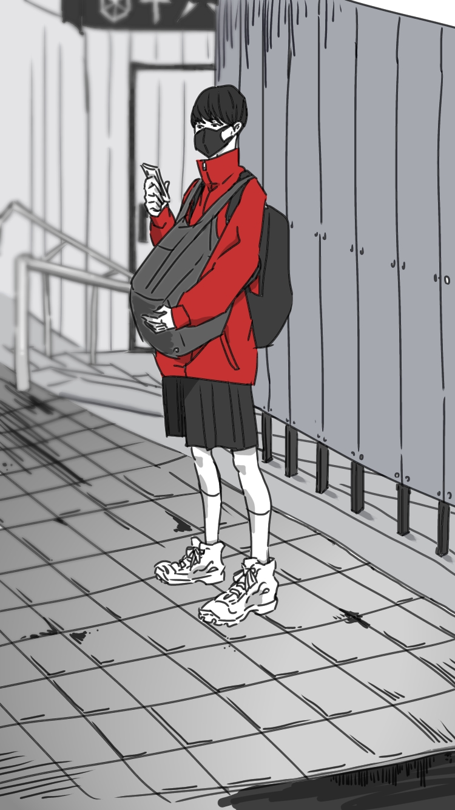
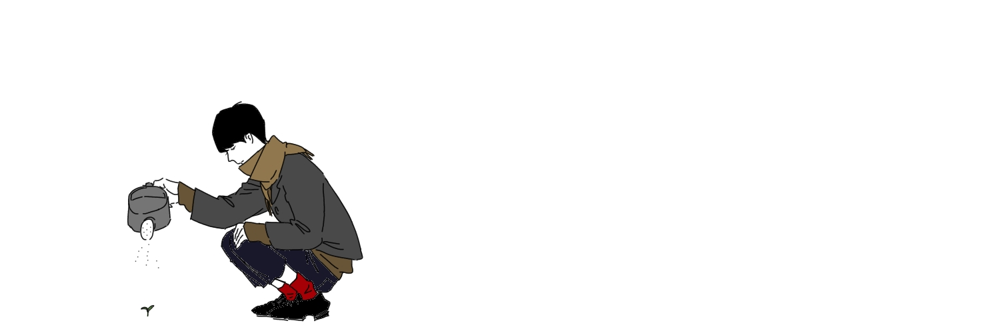
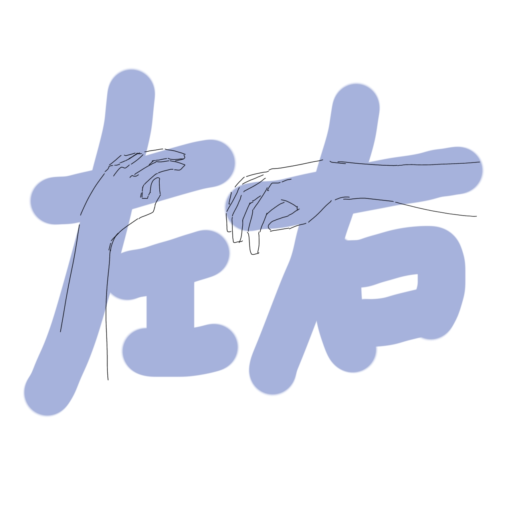
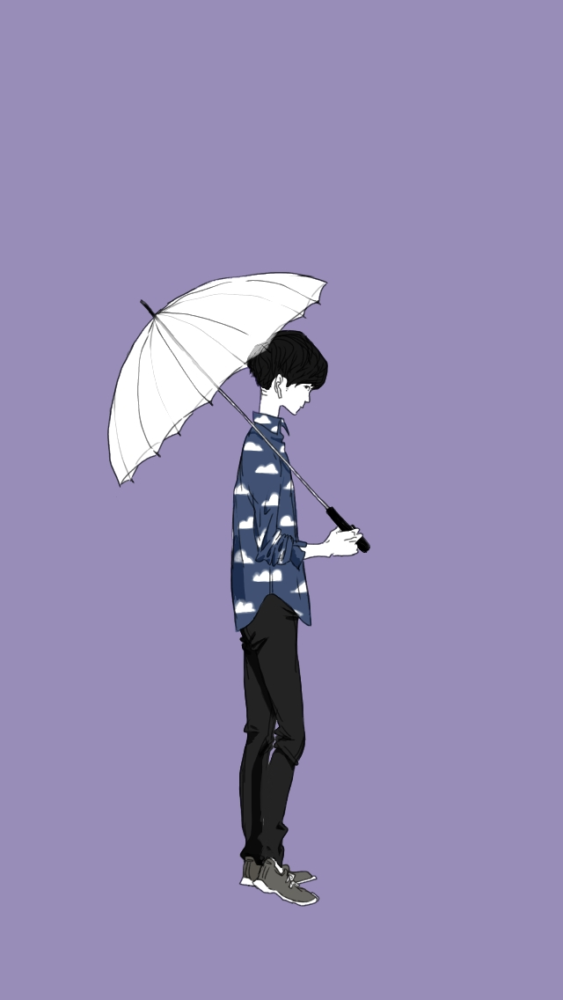
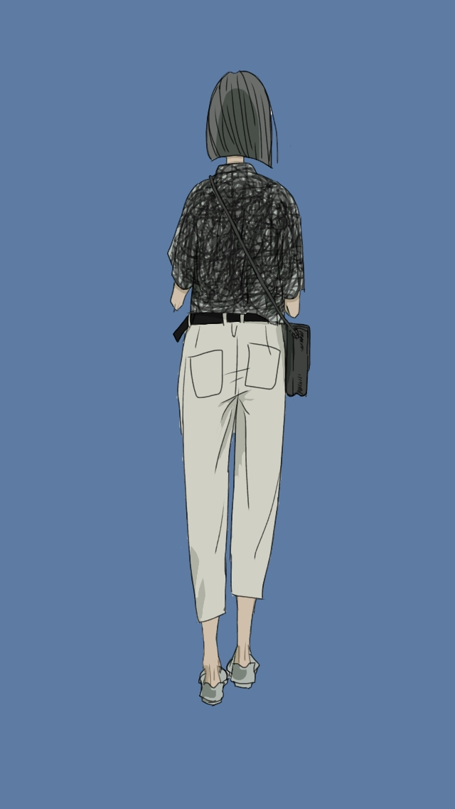
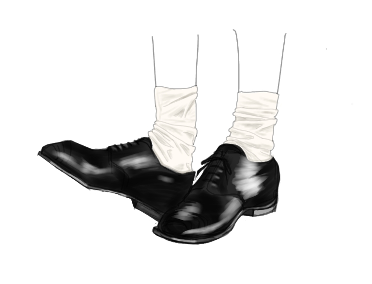

「ヒトコマ」

- 概要
- 結婚式ムービーをアニメーションでオーダーメイドで作成するサービスをPRするサイトです（架空サイト）。
- 目的
- 式場や業者が作るムービーを検討するとき選択肢に追加されるために、作品のコンセプトや雰囲気を伝え、好感を持ってもらうこと
- ターゲット
- 結婚披露宴を控える花嫁様で、自分達が出演するムービーに苦手意識がある方や、あまり写真を使いたくない方、少し違ったテイストでムービーを上映したい方。かつ、演出に多少予算を割いてもいい方。また、イラストアニメーションというサービスの特性から、絵を描くことが好きな花嫁様も重要なターゲットだと思い、タブレットにも対応しました。
- そのデザインにした意図
- 二人の歴史があって結婚に至ったことを表すため、各場面をつなぐ一本の曲線を背景に引きました。それをムービーに落とし込むサービスなので、曲線は最終的にロゴマークに行き着きます。
同業他社のサイトを調べたとき、お得感を出しすぎて結婚式のイメージとギャップがあるようなものが多かったので、「いつもの二人」を大切にするサービスの雰囲気を全面に出して、他社との差別化を図りました。 - 製作期間
- 企画：4時間
デザイン：14時間
コーディング：40時間 - 使ったもの
- Illustrator/Photoshop/Cacoo/jQuery
Webサイトへ
「スマートサイクル」

- 概要
- 社内で発生する申請・承認業務を、システム上で完結できるサービス「スマートサイクル」のランディングページです（架空サイト）。
- 目的
- 資料ダウンロード、申し込み、無料体験のいずれかを押してもらうこと
- ターゲット
- 中小企業の総務担当者。現在紙での申請・承認業務が主流だが、テレワークを進めるためにワークフローシステムの導入を検討中。
- そのデザインにした意図
- 導入により業務態様が一新することを印象付けるため、ファーストビューの背景はコントラストが強い色の組み合わせにしました。情報量が多いため、色数を抑えることと、シンプルなレイアウトにすることで雑多な印象を与えないようにしました。
SPでは最初から画面下にコンバージョンボタンを表示させています。PCでは、テキストが一部隠れることになり反射的に「邪魔だ」と思われる可能性が高かったため、ユーザビリティを優先し、なくしました。 - 製作期間
- 企画：8時間
デザイン：10時間
コーディング：21時間 - 使ったもの
- Illustrator/Photoshop/Adobe XD/jQuery/Git
Webサイトへ
ポートフォリオ

- 概要
- 「社会人経験のある30歳近い私」のことを簡潔に分かりやすく伝えるためのサイトです。
- 目的
- 履歴書や職務経歴書では分からない、自分の人柄や雰囲気を表現することと、数ある応募資料の中から自分に興味を持ってもらい、一緒に働きたいと思ってもらえること
- ターゲット
- Web制作会社の採用担当の方。とても多忙。一人のポートフォリオサイトにかけられる時間は30秒ほど。
- そのデザインにした意図
- 読み込みに時間がかかってページを離脱されることを防ぎたいと思い、ローディング時のアイコン表示や、左上綴じの紙をめくるときのような画面遷移の動きをつけました。「公務員」のイメージを逆手に取り、紙のテクスチャや、ふせん・ハンコモチーフを使うことで、「Webだけどアナログ」という個性を出しました。
- 製作期間
- 企画：3時間
デザイン：23時間
コーディング：63時間 - 使ったもの
- Illustrator/Photoshop/Cacoo/jQuery/Git
Webサイトへ
イラスト制作
遊び心を大切にしながら絵を描いています。
通勤中や街中で見かけた「なんかいいな」と思った人達もよく描きます。

ウェルカムボード

金山駅の粋な二人

作業机

ジャージ女子

一本満足バー食べてる人

お仕事お疲れ様です

西岐阜駅の女子高生

twitterヘッダー

「左」のはらいが長い理由
「左」のはらいが長い理由
「右」の横棒が長い理由

見てるのばれた

柄物シャツを着こなす人
